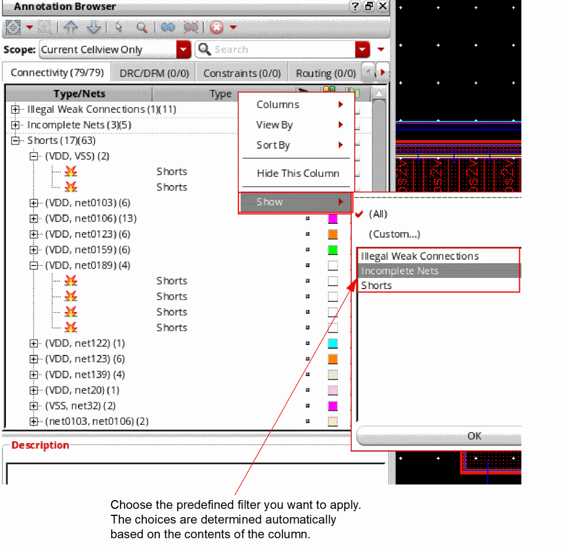
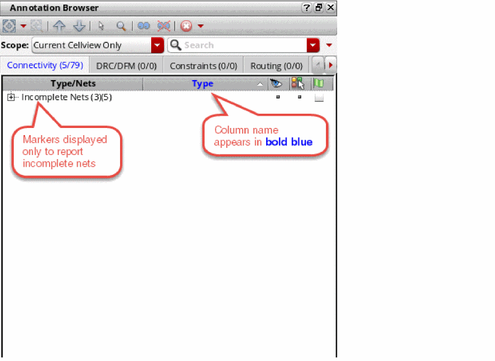
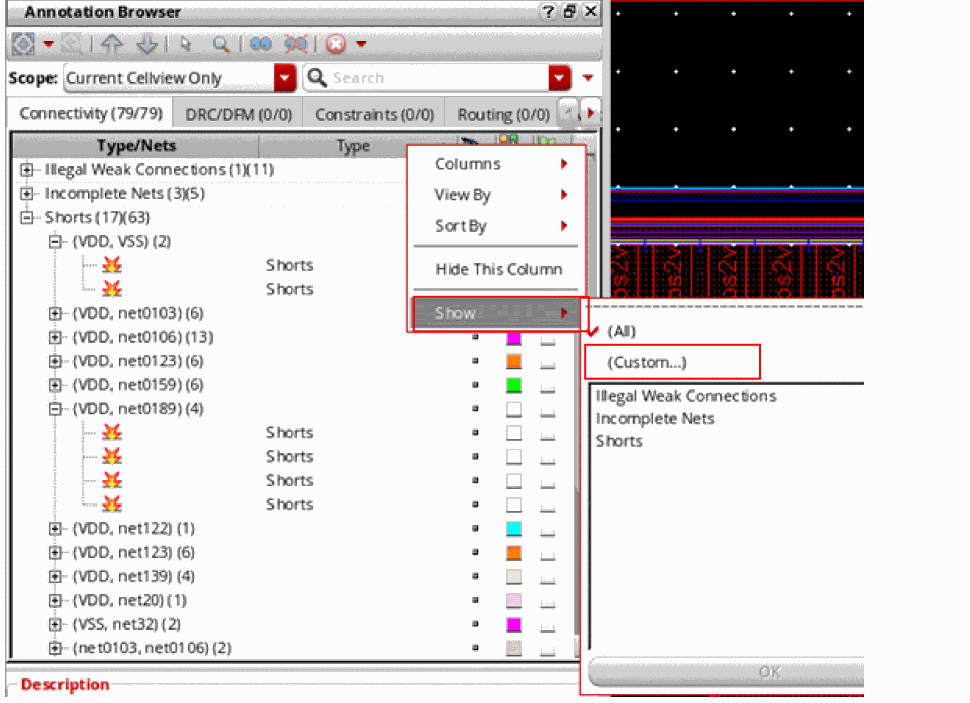
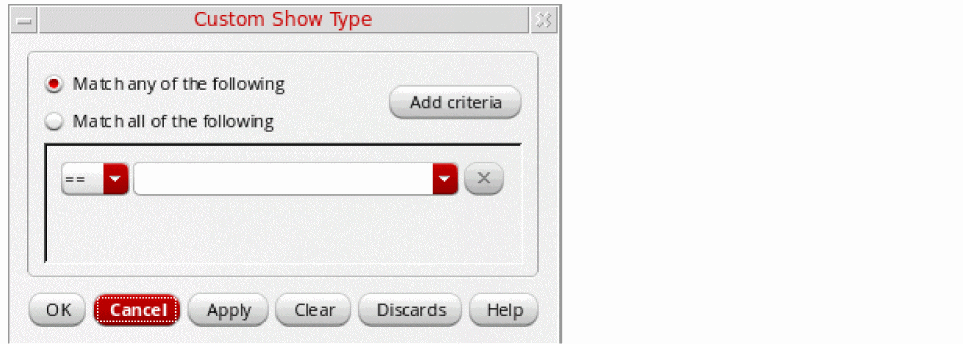
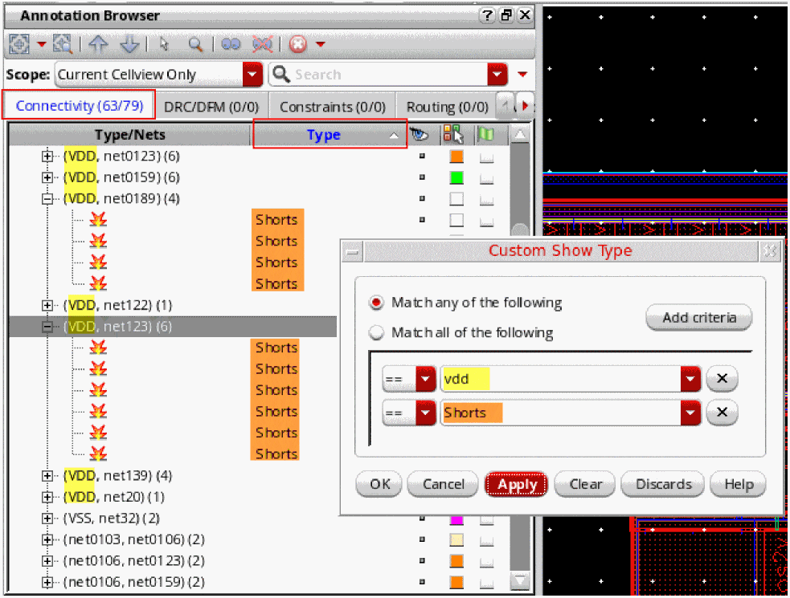
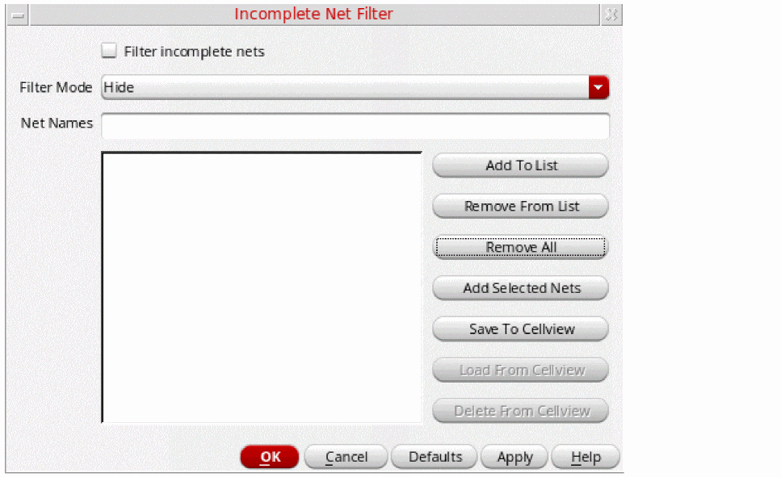
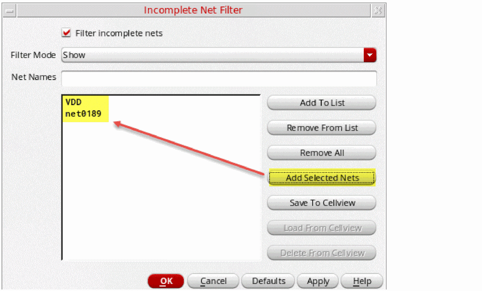
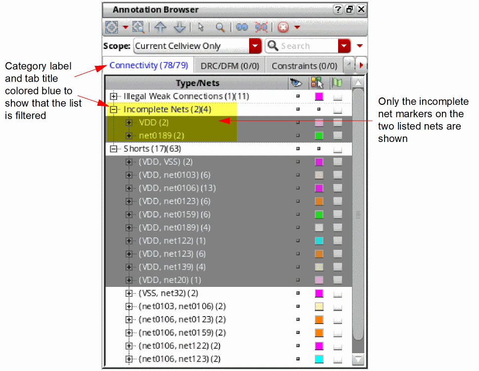
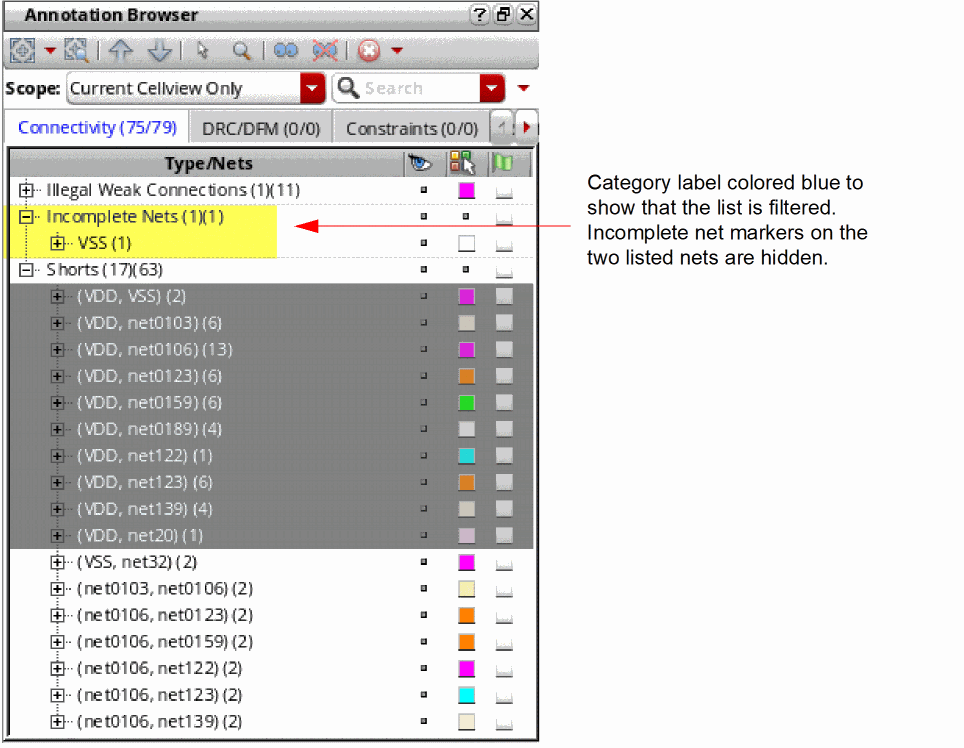

Filtering Markers in the Annotation Browser
You can filter the markers shown in the Annotation Browser display using either a predefined column filter, or by defining your own filter using the Custom Show Filter form. Additionally, you can use the Incomplete Net filter form to filter incomplete net markers based on the set of currently selected nets in the layout canvas or Navigator assistant.
Setting a Predefined Column Filter for Markers
You can set a predefined filter for a column to selectively show the markers in that column. For example, you can set a predefined filter on the Type column to only show the markers of a particular type, such as Incomplete Nets or Shorts.
To set a predefined filter for a Column:
- Right-click the header of the column to which you want to apply the filter.
-
In the shortcut menu, choose Show from the list of simple filters and click an appropriate filter from the predefined filter list.
-
Click OK to proceed.
The browser updates to show only the markers corresponding to incomplete nets.
The column header displays in bold blue text to indicate that a filter is set on the column.

If required, you can apply a predefined or custom filter on another column. The browser shows only those markers that match all the filter criteria for all the columns.
To remove the applied filter and to display all the markers, choose Show – All.
Defining and Applying a Custom Filter
To define and apply a custom filter:
- Right-click the header of the column to which you want to apply the filter.
-
In the shortcut menu, choose Show – Custom to define a custom filter for the column.
The Custom Show Filter Form displays. - Click Add criteria to add a criterion for filtering the markers, such as vdd.
-
For each criterion, choose the operator from the first pull-down list and select the column content to filter by from the second pull-down list.
For example, the custom filter shown below displays all the shorts on net vdd.
 -
Click OK to apply the changes and close the Custom Show Filter Form.
The column header is drawn in bold blue text, as shown in the figure above, to indicate that a filter is set on the column.
In addition, the tab in which you applied the custom filter also has its header text turned blue.
If required, you can apply a predefined or custom filter on another column. The browser shows only those markers that match all the filter criteria for all the columns.
To remove the applied filter(s) and to display all the markers, choose Show – All.
Setting an Incomplete Net Filter
You can set an incomplete net filter for the selected nets in a window. This ensures that the Annotation Browser assistant displays (or hides) the incomplete net markers only for the specified list of nets in a given window.
To set an incomplete net filter:
-
Use the abSetIncompleteNetFilter SKILL function.
The SKILL function enables you to specify a list of net names in a window for which a specific filter state—Show or Hide—needs to be set. Relatedly, you can use the abGetCurrentIncompleteNetFilter SKILL function to determine the current incomplete net filter state applied. - Use the Incomplete Net Filter command in the shortcut menu of the browser pane.
Alternatively, you can update the incompleteNetFilter environment variable to set the filter, if the environment variable is set otherwise.
Let us see how an incomplete net filter state can be set using the Incomplete Net Filter command.
Consider the image below, which shows the Annotation Browser with incomplete net markers associated with 3 nets: VDD, VSS, and net0189.
Now, select nets VDD and net0189 from the layout Navigator assistant. To filter the incomplete net markers shown in the Annotation Browser based on the selected net in the layout window:
-
In the Annotation Browser, right-click any of the markers associated with the selected nets and choose Incomplete Net Filter.
The markers associated with the nets selected in the Navigator assistant (or the layout canvas) are cross-selected in the Annotation Browser.
The Incomplete Net Filter form displays.
 - Select the Filter incomplete nets check box to specify that filtering needs to be driven by the values of the incompleteNetFilterDefaultList and incompleteNetFilterMode environment variables.
- Choose an appropriate Filter Mode to either Show or Hide the markers for the specified nets.
-
Type the Net Names to apply the filtering and click Add To List.
If you already have the nets on which to apply filtering selected in the Navigator assistant or the layout canvas, instead of manually typing the net names in the Incomplete Net Filter form, you can click the Add Selected Nets button.
The net names are added to the form as a list, as shown in the figure below.
 -
Click OK.
The browser updates to show only the incomplete net markers associated with the listed nets. All other incomplete net markers are hidden.
The label for the Incomplete Nets category and the tab label are colored blue to indicate that a filter has been applied. The marker count in the tab label also indicates that some markers are hidden. - Bring up the Incomplete Net Filter form again and this time choose Hide nets from list from the pull-down list at the top.
-
Click OK.
The browser updates to hide the incomplete net markers associated with the listed nets. All the other incomplete net markers are shown.
The label for the Incomplete Nets category and the tab label are colored blue to indicate that a filter has been applied. The marker count in the tab label also indicates that some markers are hidden.
Related Topics
Annotation Browser Options Form
Setting a Predefined Column Filter for Markers
Defining and Applying a Custom Filter
Setting an Incomplete Net Filter
Annotation Browser Shortcut Menus
Grouping Markers in the Annotation Browser
Sorting Markers in the Annotation Browser
Filtering Markers in the Annotation Browser
Return to top